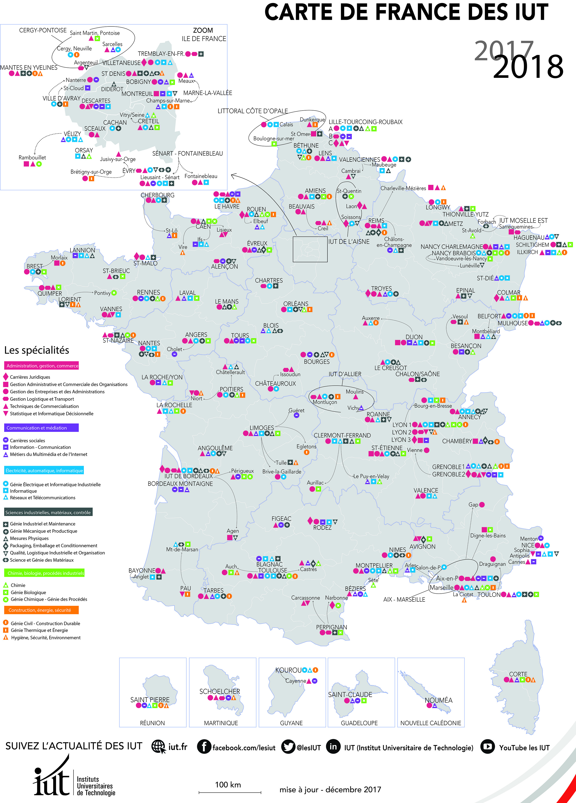

Qu'est-ce que le DUT informatique ?
Les départements d'informatique des IUT de France forment des étudiants à l'informatique et au travail en équipe afin de les insérer dans la vie professionnelle.
Ils proposent ainsi une formation taille humaine, encadrée par des professeurs disponibles, ainsi que par des professionnels expérimentés qui apportent aux étudiants une expérience pratique et concrète des métiers de l'informatique.
L'enseignement en informatique (du DUT ou de la Licence Professionnelle) repose sur 3 axes, chacun d'entre eux requérant des qualités et des compétences spécifiques :

Analyse et conception
Travail préliminaire en relation avec le client pour spécifier son besoin et ses attentes et la conception du schéma d'un traitement informatique.Compétences requises:
- Communication
- Ouverture d'esprit
- Capacités d'analyse et de synthèse

Algorithmique et programmation
Mise en oeuvre effective du traitement jusqu'au codage.Compétences requises:
- Esprit logique
- Précision technique

Architecture système et réseaux
Fonctionnement d'un ordinateur, de son système d'exploitation et des réseaux.Compétences requises:
- Curiosité
- Patience
A ces enseignements ciblés s'ajoutent pour moitié des disciplines d'enseignement général (Mathématiques, Economie et Gestion, Anglais et Communication...). Ceci confère à la formation un aspect pluridisciplinaire.
L'évaluation se fait non seulement sur la théorie mais également sur des mises en situation, via des projets tuteurés et un stage en entreprise, permettant de valider les connaissances et compétences acquises lors de la formation.
L'IUT permet une insertion dans le monde professionnel aprés l'obtention du diplôme mais il est recommandé pour l'étudiant de poursuivre ses études.
Et après l'IUT ?
La poursuite d'étude
Après un DUT, les étudiants peuvent choisir d'intégrer ces formations :- Écoles d'ingénieurs
- Licence et maîtrise d'informatique
- Licence et maîtrise de sciences et techniques informatiques
- IUP MIAGE
- Formation complémentaires à l'étranger
- Formation en alternance
- Master informatique
- Licence professionnelle systèmes informatiques et logiciels
L'insertion professionnelle
Les étudiants peuvent intégrer l'un de ces milieux professionnels :-
Production et exploitation
Administrateur de bases de données, Administrateur systèmes et réseaux, Analyste d'exploitation, Gestionnaire de parc micro, Technicien help desk, Technicien réseaux et télécoms, Webdesigner, Webmaster.
-
Etudes, développement et intégration
Chefs de projet en SSII ou en TIC, Développeur de jeux vidéo multimédia, Analyste programmeur, Directeur de projet, Intégrateur, Paramétreur de PGI.
-
Administration et gestion de la DSI
Auditeur informatique, Directeur des systèmes d'information, Responsable des études, Responsable d'exploitation.
-
Support et assistance technique
Chargé d'affaires interne, Formateur, Analyste système, Directeur technique, Responsable sécurité , Spécialiste sécurité, Spécialiste méthode, Architecte réseaux, Architecte technique, Architecte base de données.
-
Conseil en système d'information et maîtrise d'ouvrage (MOA)
Chef de projet MOA, Conseil - consultant en système d'information , Consultant en business intelligence, Consultant en sécurité, Consultant MOA , Consultant ERP , Consultant spécialisé sur des marchés non encore matures, Responsable en conduite du changement, Responsable de SI métier, Responsable de projet fonctionnel, Architecte du SI, Correspondant informatique.
Où me former ?
Il y a plus d'une trentaine d'IUT informatique en France, trouver celle la plus proche de chez vous. Télécharger